ホーム → 文法 → DoJG main menu → 基本 → Basic Page 224
Adverb
| Someone or something is in some state he or it was in some time ago. | Still; (not) yet |
| 【Related Expression: もう】 |
(ksa). 木村君はまだ昼ご飯を食べている・います。
Mr. Kimura is still eating his lunch.
(ksb). 太田さんはまだそのことを知らない・知りません。
Mr. Oota still doesn't know about it.
(a). お酒はまだありますか。
Do you still have sake?
(b). 私はまだ日本へ行ったことがない。
I have not been to Japan yet.
(c). A:もう昼ご飯を食べましたか。 B:いえ、まだ食べていません。/いい、まだです。
A: Have you eaten your lunch yet? B: No, I haven't eaten it yet./No, not yet.
1. まだ expresses the idea that someone or something is in the same state that he or it was in some time ago. In affirmative sentences, まだ always corresponds to 'still'. In negative sentences, however, it corresponds to 'yet' when an action has not yet been taken, and 'still' in other situations, as in Example (c) and Key Sentence (B), respectively.
2. The abbreviated sentence seen in B2 of Example (c) is used only when the response to a question is a negative one.
【Related Expression】
The concept which まだ expresses is opposite to that of もう. [1] illustrates the difference between the idea conveyed by まだ and the one conveyed by もう.
